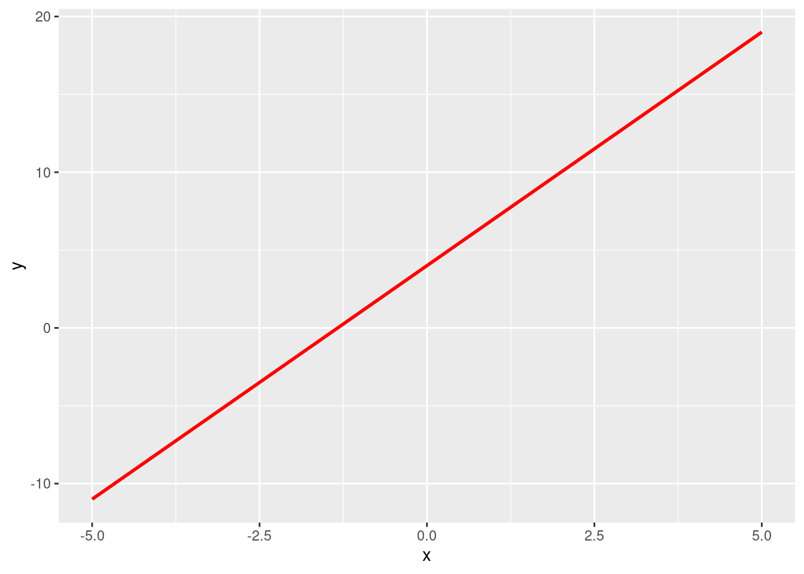
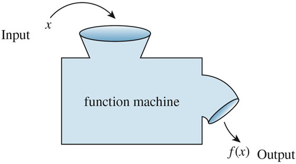
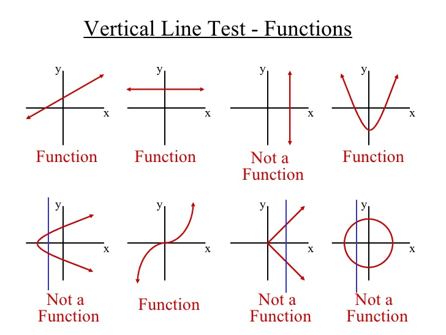
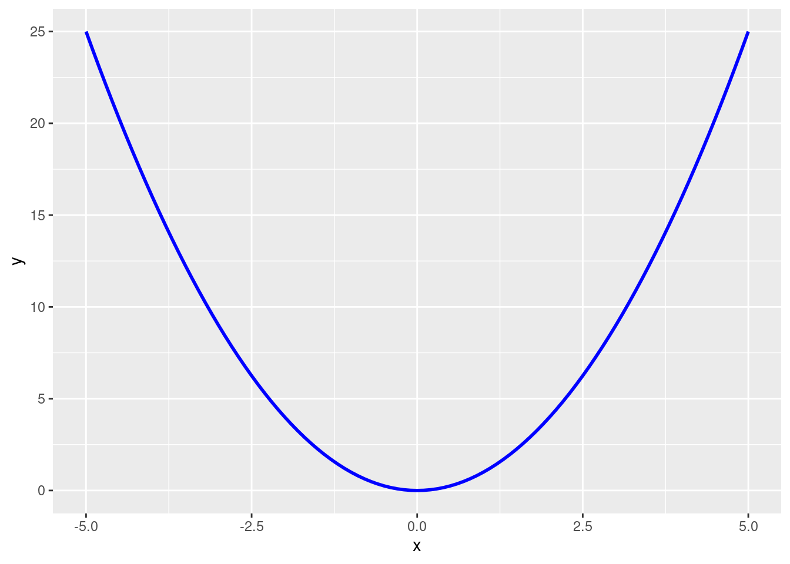

5 Functions and loops
5.1 Basics
5.1.1 What is a function?
A function, in layman’s terms, is anything that takes input(s) and gives one defined output.
There are always three main parts:
- The input (\(x\) values, or each value in the domain)
- The relationship of interest
- The output (\(y\) values, or a unique value in the range)
Note
“\(f(x) = \space ...\) is the classic notation for writing a function, but we can also use”\(y = \space ...\)“. This is because \(y\) is”a function of” \(x\), so \(y=f(x)\).
- Let’s take a look at an example and break down the structure:
\[f(x) = 3x + 4\]
\(x\) is the input (some value) that the function takes.
For any \(x\), we multiply by three and add 4, which is the relationship.
Finally, \(f(x)\) or \(y\) is the unique result, or the output.
5.1.2 Function machine

- The most common name to give a function is, predictably, “\(f\)”, but we can have other names such as “\(g\)” or “\(h\)”. The choice is yours.
Important
When referring to functions, we say “[name of function] of x equals [relationship]. For example, \(f(x) = x^2\) is referred to as”f of x equals x squared.”
5.1.3 Vertical line test
- Functions are single-valued, meaning that it will not produce two or more results for the same input.
Warning
Two distinct inputs may have the same output (“many-to-one”) ✅ . That is not a problem. A function, however, cannot have one input with more than one output (“one-to-many”) 🚫 .
The easiest visual test to test whether something is a function is known as the vertical line test.
- This means that no vertical line ever crosses more than one value on a graph. It it does, we do not have a function.

5.2 Types of functions
5.2.1 Linear functions
- We can easily make a function that describes a line.
\[y=mx+b\] - \(m\) is the slope (for every one unit increase in \(x\), \(y\) increases \(m\) units).
\(b\) is the y-intercept: the value of \(y\) when \(x=0\).
More generally, \(y=a+bx\) - \(a\) is the intercept and \(b\) is the slope.
5.2.2 Quadratic
- These lines have one curve. \[y=ax^2 + bx + c\]
- \(a\), \(b\), and \(c\) don’t have well-defined meanings here.
- If \(a\) is negative, the function opens downward; if \(a\) is positive,it opens upward.
- Note that \(x^2\) always returns positive values.
5.2.3 Cubic
- These lines (generally) have two curves (inflection points).
- \(y=ax^3 + bx^2 + cx +d\)
- \(a\), \(b\), \(c\), and \(d\) don’t have well-defined meanings here.

5.2.4 Polynomial
\[y=ax^n + bx^{n-1} + ... + c\] - These functions have (maximum) \(n-1\) changes in direction (turning points). - They also have (maximum) \(n\) x-intercepts. - They can be made arbitrarily precise.
5.2.5 Exponential
\[y = ab^{x}\] or \[f(x)=ab^x\]
- Here our independent variable, or input (\(x\)), is the exponent.
5.2.6 Trigonometric functions
- These functions include sine, cosine, and tangent.
- They are interesting (to some), but not usually useful for social science.
5.3 Logarithms and exponents
5.3.1 Logarithms
- Logarithms are basically the opposite (inverse) of exponents.
- They ask how many times you must raise the base to get \(x\).
- \(log_a(b)=x\) is asking “a raised to what power x gives b?
- \(\log_3(81) = 4\) because \(3^4=81\)
- Logarithms can be undefined.
- The base cannot be 0, 1, or negative.
5.3.2 Relationships
If, \[ log_ax=b\] then, \[a^{log_{a}x}=a^b\] and \[x=a^b\]
5.3.3 Basic rules
\[\dfrac{\log_x n}{\log_x m} = \log_m n\]
\[\log_x(ab) = \log_xa + \log_xb \]
\[\log_x\left(\frac{a}{b}\right) = \log_xa - \log_xb\]
\[\log_xa^b = b \log_x a\]
\[\log_x 1 = 0\]
\[log_{x}x=1\]
\[m^{\log_m(a)} = a\]
5.3.4 Natural logarithms
- We most often use natural logarithms.
- This means log\(_e(x)\), often written ln\((x)\).
- \(e \approx 2.7183\).
- ln(x) and its exponent opposite, \(e^x\), have nice properties when we hit calculus.
5.3.5 Definition of e
- Imagine you invest $1 in a bank and receive 100% interest for one year, and the bank pays you back once a year: \[(1+1)^1= 2\]
- When it pays you twice a year with compound interest:
\[(1+1/2)^2=2.25\]
- If it pays you three times a year:
\[(1+1/3)^3=2.37...\]
- What will happen when the bank pays you once a month? Once a day?
\[(1+\frac{1}{n})^{n}\]
- However, there is limit to what you can get
\[\lim_{n\to\infty} (1 + \dfrac{1}{n})^n = 2.7183... = e\]
- For any interest rate \(k\) and number of times the bank pays you \(t\): \[\lim_{n\to\infty} (1 + \dfrac{k}{n})^{nt} = e^{kt}\]
- \(e\) is important for defining exponential growth. Since \(ln(e^x) = x\), the natural logarithm helps us turn exponential functions into linear ones.
Practice
Solve the problems below, simplifying as much as you can. \[log_{10}(1000)\] \[log_2(\dfrac{8}{32})\] \[10^{log_{10}(300)}\] \[ln(1)\] \[ln(e^2)\] \[ln(5e)\]
5.4 Functions of functions
5.4.1 Basics
Functions can take other functions as arguments.
This means that outside function takes output of inside function as its input.
This is typically written as \(f(g(x))\).
Say we have the exterior function f(x)=\(x^2\) and the interior function g(x)=\(x-3\).
Then if we want f(g(x)), we would subtract 3 from any input, and then square the result.
We write this \((x-3)^2\), NOT \(x^2-3\).
5.4.2 PMF, PDF, and CDF
- PMF - probability mass function
- This gives the probability that a discrete random variable is exactly equal to some value.
- PDF - probability density function
- This gives the probability that a continuous random variable falls within a particular range of values.
- CDF - cumulative distribution function
- This gives the probability that a random variable X takes a value less than or equal to \(x\).